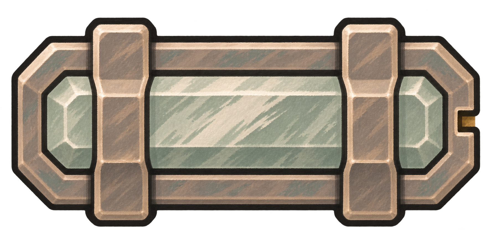
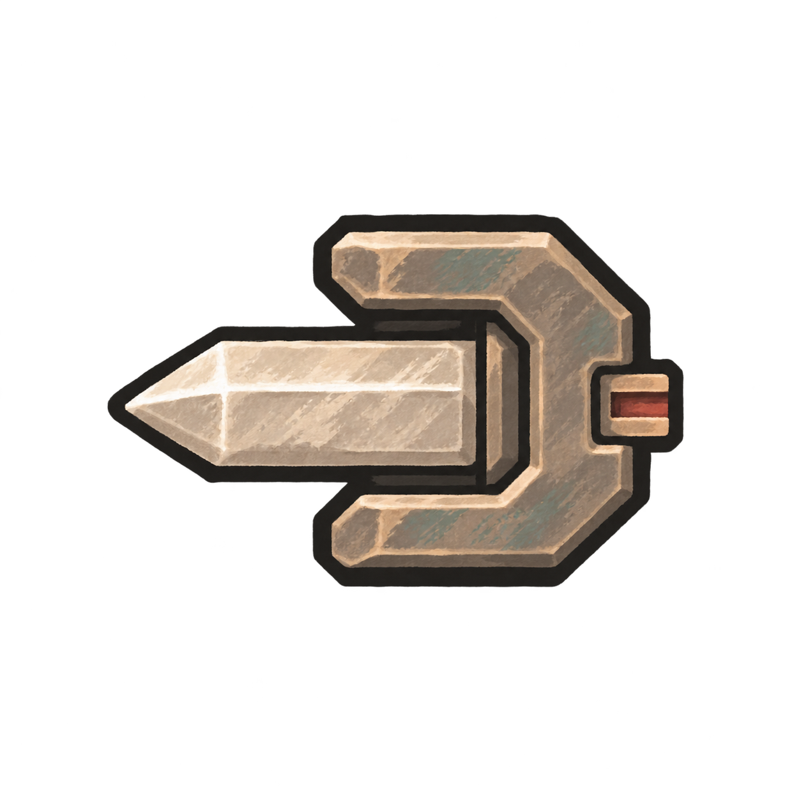
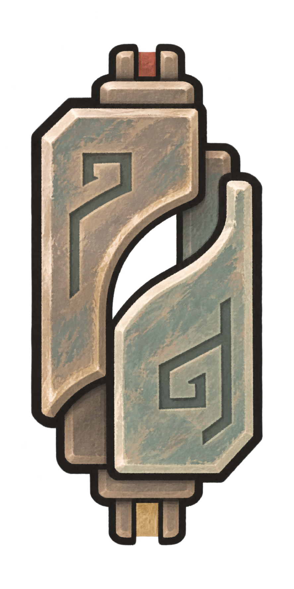

当前为设计对照
铜纹阵盘 · 基础元件与接线
四件独立原图，按实际占格比例展示。这里只看摆放与接线外观。

四件基础阵材
按实际占格比例显示。



接线对照
中性灰褐衬面对照，非盘底定稿。阵眼的铜耳不作为接点。
接线样式近景
朱砂细纹传信号，淡赭金宽纹供能。
当前为设计对照
四件独立原图，按实际占格比例展示。这里只看摆放与接线外观。
按实际占格比例显示。



中性灰褐衬面对照，非盘底定稿。阵眼的铜耳不作为接点。
朱砂细纹传信号，淡赭金宽纹供能。